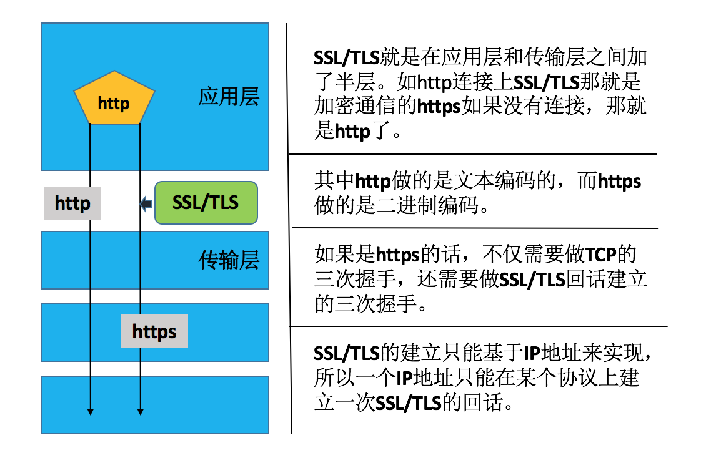

纸上得来终觉浅，绝知此事要躬行。
SSL(Secure Sockets Layer 安全套接字协议)，及其继任者传输层安全(Transport Layer Security，TLS)是为网络通信提供安全及数据完整性的一种安全协议。TLS 与 SSL 在传输层与应用层之间对网络连接进行加密。
1. 密码学基础
密码算法和协议
- 对称加密
- 公钥加密
- 单向加密
- 认证协议
1.1 对称加密
对称加密：加密和解密使用同一个密钥
常见算法
DES3DESAESBlowfishTwofishIDEARC6CAST5
特性
- 加密、解密使用同一个密钥
- 将原始数据分割成固定大小的块，逐个进行加密
缺陷
- 密钥过多
- 密钥分发
1.2 公钥加密
公钥加密：密钥是成对儿出现
常见算法
RSADSAELGamal
加密介绍
- 公钥
pubkey- 公开给所有人
- 私钥
secret key- 自己留存，必须保证其私密性
- 特点
- 用公钥加密的数据，只能使用与之配对儿的私钥解密，反之亦然
1.3 单向加密
单向加密：只能解密，不能解密，提取数据指纹
算法
md5:128bitssha1:160bitssha224sha256sha384sha512
特性
- 定长输出
- 雪崩效应
功能
- 完整性
1.4 PKI 和 SSL
PKI是
Public Key Infrastructure首字母的一个缩写，表示公钥基础设施，主要是用于认证的。
X.509定义了证书的结构以及认证协议标准- 现在我们使用的为
ssl的第三版
PKI 中的相关角色
- 签证机构：
CA - 注册机构：
RA - 证书吊销列表：
CRL - 证书存取库
X.509
- 版本号
- 序列号
- 签名算法
ID - 发行者名称
- 有效期限
- 主体名称
- 主体公钥
- 发行者惟一标识
- 主体的惟一标识
- 扩展
- 发行者签名
SSL 版本
SSL：Secure Socket LayerTLS：Transport Layer SecuritySSLTLS
SSL 的分层设计
- 最低层：
- 基础算法原语的实现
aes,rsa,md5
- 向上一层
- 各种算法的实现
- 再向上一层
- 组合算法实现的半成品
- 用各种组件拼装而成的种种成品密码学协议/软件
tls,ssh

2. OpenSSL
OpenSSL是一个强大的安全套接字层密码库，囊括主要的密码算法、常用的密钥和证书封装管理功能及SSL协议，并提供丰富的应用程序供测试或其它目的使用。
OpenSSL功能强大，可以进行加解密OpenSSL也可以进行PKI的认证机制
OpenSSL 有两种运行模式
- 交互模式
- 直接输入
openssl回车进入交互模式
- 直接输入
- 批处理模式
- 输入带命令选项的
openssl进入批处理模式
- 输入带命令选项的
2.1 openssl 的三个组件
openssl- 多用途的命令行工具
libcrypto- 公共加密库，实现了各种各样的加密算法
libssl- 也是一个库，实现了
ssl及tls
- 也是一个库，实现了
2.2 PKI 中的相关角色
- 签证机构：
CA - 注册机构：
RA - 证书吊销列表：
CRL - 证书存取库
2.3 证书申请及签署步骤
- （1）生成申请请求，需要输出相关信息
- （2）
RA核验 - （3）
CA签署 - （4）获取证书
2.4 创建私有 CA 的方法
实现工具
- 创建私有
CA的专业开源工具OpenCA - 创建私有
CA的简要实现工具OpenSSL，这里选择后者
配置文件
- 这里以
CentOS6中进行配置 openssl的配置文件：/etc/pki/tls/openssl.cnf
创建私有 CA 的步骤
- (1) 创建所需要的文件
# 服务器上配置
[root@localhost ~]# cd /etc/pki/CA
[root@localhost CA]# ls
certs crl newcerts private
[root@localhost CA]# touch index.txt; echo 01 > serial
[root@localhost CA]# ls
certs crl index.txt newcerts private serial- (2) CA 自签证书
# 服务器上配置
# ()表示在子SHELL中运行，不会影响父SHELL的环境，这里生成秘钥对
# -new: 生成新证书签署请求
# -x509: 专用于CA生成自签证书
# -key: 生成请求时用到的私钥文件
# -days n: 证书的有效期限
# -out /PATH/TO/SOMECERTFILE: 证书的保存路径
# 创建私钥文件
[root@localhost CA]# (umask 077; openssl genrsa -out /etc/pki/CA/private/cakey.pem 2048)
Generating RSA private key, 2048 bit long modulus
................................................................................................................................................+++
.......+++
e is 65537 (0x10001)
[root@localhost CA]# ls -l private/
总用量 4
-rw-------. 1 root root 1679 6月 26 11:35 cakey.pem
# 生成CA自签证书，只有CA才可以自签署
# 注意这里的Common Name必须和放置CA的主机名一致
[root@localhost CA]# openssl req -new -x509 -key private/cakey.pem -days 7300 -out cacert.pem
You are about to be asked to enter information that will be incorporated
into your certificate request.
What you are about to enter is what is called a Distinguished Name or a DN.
There are quite a few fields but you can leave some blank
For some fields there will be a default value,
If you enter '.', the field will be left blank.
-----
Country Name (2 letter code) [XX]:CN
State or Province Name (full name) []:Beijing
Locality Name (eg, city) [Default City]:Beijing
Organization Name (eg, company) [Default Company Ltd]:wsescape
Organizational Unit Name (eg, section) []:Ops
Common Name (eg, your name or your server is hostname) []:ca.wsescape.com
Email Address []:caadmin@wsecape.com
[root@localhost CA]# ls
cacert.pem certs crl index.txt newcerts private serial- (3) 给应用发证书
# (a) 用到证书的主机生成证书请求
# 客户端上配置
[root@localhost ~]# cd /etc/httpd/
[root@localhost httpd]# mkdir ssl; cd ssl
# 生成httpd的私钥文件httpd.key
[root@localhost ssl]# (umask 077; openssl genrsa -out /etc/httpd/ssl/httpd.key 2048)
# 用httpd.key的私钥文件生成一个公钥文件httpd.csr
# 这里填写的数据和服务器中的信息需要一致才可能够使用
[root@localhost ssl]# openssl req -new -key /etc/httpd/ssl/httpd.key -days 365 -out /etc/httpd/ssl/httpd.csr# (b) 把请求文件传输给CA
# 客户端上配置
# 172.16.100.6为服务器CA地址
[root@localhost ssl]# scp httpd.csr root@172.16.100.6:/tmp/# (c) CA签署证书，并将证书发还给请求者
# 服务器上配置
# 172.16.100.9为客户端配置
[root@localhost ~]# openssl ca -in /tmp/httpd.csr -out /etc/pki/CA/certs/httpd.crt -days 365
[root@localhost ~]# scp /tmp/httpd.csr root@172.16.100.9:/etc/httpd/ssl/
# 查看证书中的信息
[root@localhost ~]# openssl x509 -in /PATH/FROM/CERT_FILE -noout -text|-subject|-serial- (4) 吊销证书
# (a) 客户端获取要吊销的证书的serial
openssl x509 -in /PATH/FROM/CERT_FILE -noout -serial -subject
# (b) CA端执行以下步骤
# 先根据客户提交的serial与subject信息，对比检验是否与index.txt文件中的信息一致
# 吊销证书
openssl ca -revoke /etc/pki/CA/newcerts/SERIAL.pem
# (c) 生成吊销证书的编号(第一次吊销一个证书)
echo 01 > /etc/pki/CA/crlnumber
# (d) 更新证书吊销列表
openssl ca -gencrl -out thisca.crl
# 查看crl文件
openssl crl -in /PATH/FROM/CRL_FILE.crl -noout -text2.5 PKI 的配置文件
[root@localhost ~]# cat /etc/pki/tls/openssl.cnf
...
####################################################################
[ ca ]
default_ca = CA_default # The default ca section
####################################################################
[ CA_default ]
dir = /etc/pki/CA # Where everything is kept
certs = $dir/certs # Where the issued certs are kept
crl_dir = $dir/crl # Where the issued crl are kept
database = $dir/index.txt # database index file.
#unique_subject = no # Set to 'no' to allow creation of
# several ctificates with same subject.
new_certs_dir = $dir/newcerts # default place for new certs.
certificate = $dir/cacert.pem # The CA certificate
serial = $dir/serial # The current serial number
crlnumber = $dir/crlnumber # the current crl number
# must be commented out to leave a V1 CRL
crl = $dir/crl.pem # The current CRL
private_key = $dir/private/cakey.pem# The private key
RANDFILE = $dir/private/.rand # private random number file
x509_extensions = usr_cert # The extentions to add to the cert
# Comment out the following two lines for the "traditional"
# (and highly broken) format.
name_opt = ca_default # Subject Name options
cert_opt = ca_default # Certificate field options
# Extension copying option: use with caution.
# copy_extensions = copy
# Extensions to add to a CRL. Note: Netscape communicator chokes on V2 CRLs
# so this is commented out by default to leave a V1 CRL.
# crlnumber must also be commented out to leave a V1 CRL.
# crl_extensions = crl_ext
default_days = 365 # how long to certify for
default_crl_days = 30 # how long before next CRL
default_md = default # use public key default MD
preserve = no # keep passed DN ordering
...3. OpenSSL 命令
分为三类
- 标准命令
- 消息摘要命令
- 加密命令
3.1 对称加密
要点
- 工具：
opensslenc,gpg - 算法：
3des,aes,blowfish,twofish
enc命令
enc是openssl的一个子命令，可以用来实现对称加密-e加密-d解密-salt表示添加杂质进去-in需要加密或者解密的文件-out需要输出的文件文件名称- 这里的加密算法可以自己指定
使用方式
- 帮助信息
man enc
- 加密
openssl enc -e -des3 -a -salt -in fstab -out fstab.ciphertext
- 解密
openssl enc -d -des3 -a -salt -in fstab.ciphertext -out fstab
实例展示
[root@localhost tset]# cat mima
I love you
[root@localhost tset]# openssl enc -e -des3 -a -salt -in mima -out jiami
enter des-ede3-cbc encryption password:
Verifying - enter des-ede3-cbc encryption password:
[root@localhost tset]# cat jiami
U2FsdGVkX1+OK5GvMnyeZpST9ncIuIXU9zM+FzdKJmM=
[root@localhost tset]# openssl enc -d -des3 -a -salt -in jiami -out jiemi
enter des-ede3-cbc decryption password:
[root@localhost tset]# cat jiemi
I love you3.2 单向加密
工具
md5sumsha1sumsha224sumsha256sumopenssl dgst
dgst命令
- 要点
dgst命令是openssl的一个子命令，可以用来实现单向加密
- 帮助
man dgst
- 格式
openssl dgst -md5 /PATH/TO/SOMEFILE
实战演示
# 这里可以指定-out保存到文件中
[root@localhost tset]# openssl dgst -md5 mima
MD5(mima)= ffa9b546d36ae095e2a4252a4981a9423.3 单向加密的用途
单向加密可以实现下面三种方式的用途
（1）MAC 算法
特点
Message Authentication Code- 单向加密的一种延伸应用，用于实现在网络通信中保证所传输的数据的完整性
机制
CBC-MACHMAC：使用md5或sha1算法- 在集群中用于各节点之间认证的加密机制
（2）生成用户密码
特点
- 使用
openssl的子命令passwd实现 - 这里加
-salt的加密密码就是Linux下给用户设置密码的机制相同
使用
- 帮助
man sslpasswd
- 格式
openssl passwd -1 -salt SALT
实战演示
# -1表示MD5
[root@localhost tset]# openssl passwd -1 -salt 123456
Password:
$1$123456$I.fsDBpqtKp/xeL5gqYrz/（3）生成随机数
使用
- 帮助
man sslrand
- 格式
openssl rand [-base64|-hex] NUM-base64表示-base64编码-hex表示16进制编码NUM:表示输出的字节数，除以2就可以当密码啦
实战演示
[root@localhost tset]# openssl rand -base64 6
vZ8Qj7n1
[root@localhost tset]# openssl rand -base64 6
3Wh8exeQ
[root@localhost tset]# openssl rand -hex 6
a1c269b8b1fd
[root@localhost tset]# openssl rand -hex 6
58d677343fb73.4 公钥加密
公钥加密可以实现下面三种方式的用途
（1）加密和解密
- 算法
RSAELGamal
- 工具
gpgopenssl rsautl
（2）数字签名
- 算法
RSADSAELGamal
- 工具
- 一般没有必要自己生成
（3）密钥交换
- 算法
dh
随机数生成器
/dev/random- 仅从熵池返回随机数
- 随机数用尽，阻塞
/dev/urandom- 从熵池返回随机数
- 随机数用尽，会利用软件生成伪随机数
- 非阻塞
实战演示
# 生成密钥对儿，依赖于随机数生成器，需要修改生成的文件权限
openssl genrsa -out /PATH/TO/PRIVATEKEY.FILE NUM_BITS
# 提取出公钥
openssl rsa -in /PATH/FROM/PRIVATEKEY.FILE -pubout# 生成密钥对儿
[root@localhost tset]# openssl genrsa -out rsakey.private 2048
Generating RSA private key, 2048 bit long modulus
................+++
.................................+++
e is 65537 (0x10001)
# 需要修改生成的文件权限
# 这里的括号表示在子SHELL中运行，由于在子shell中运行，所以本地的umask不会该表
[root@localhost tset]# (umask 077; openssl genrsa -out rsakey.private 2048)
Generating RSA private key, 2048 bit long modulus
............................+++
.......................................................................................................................................................+++
e is 65537 (0x10001)
# 提取出公钥
[root@localhost tset]# openssl rsa -in rsakey.private -pubout
writing RSA key
-----BEGIN PUBLIC KEY-----
MIIBIjANBgkqhkiG9w0BAQEFAAOCAQ8AMIIBCgKCAQEAqHk7QIMJ2b1w79YnH+2D
5RSbRAG6SlFcoDCSbJkXoSewV59QqSxDD4Ctk3oYB5c/TxsbJV+F+2Y31KFgqdZz
qzaBP+u8cKTmGXiMaOgybrlU/1Jx3+QGiQrLLsh73H/VC5//ymJBApRgeO4C+AWP
9Eytfn9cer5Ch0XdTsBjYgxV8BO1BrJCfqckdVmxhaIWzaJbPzqulM+sxLN6MNQN
eAclRMJCp+Sa8dx2amfpCKJS6RstdDh+jg6ryY6sbCAQwIQECBRGhODw1tWwatN4
mYd4RvQlMwovgef1Aaoh3Q/ZfFycF6o/Gx54VHoQmXdWfSM+JXX6MDvr/GPaBnxv
QQIDAQAB
-----END PUBLIC KEY-----3.5 openssl 的命令帮助
# openssl的命令帮助
# 标准命令
Standard commands
asn1parse ca ciphers crl crl2pkcs7
dgst dh dhparam dsa dsaparam
ec ecparam enc engine errstr
gendh gendsa genrsa nseq ocsp
passwd pkcs12 pkcs7 pkcs8 prime
rand req rsa rsautl s_client
s_server s_time sess_id smime speed
spkac verify version x509
# 做信息摘要时候使用的算法，是做单向加密的
Message Digest commands (see the dgst command for more details)
md2 md4 md5 mdc2 rmd160
sha sha1
# 支持的算法
Cipher commands (see the enc command for more details)
aes-128-cbc aes-128-ecb aes-192-cbc aes-192-ecb aes-256-cbc
aes-256-ecb base64 bf bf-cbc bf-cfb
bf-ecb bf-ofb cast cast-cbc cast5-cbc
cast5-cfb cast5-ecb cast5-ofb des des-cbc
des-cfb des-ecb des-ede des-ede-cbc des-ede-cfb
des-ede-ofb des-ede3 des-ede3-cbc des-ede3-cfb des-ede3-ofb
des-ofb des3 desx rc2 rc2-40-cbc
rc2-64-cbc rc2-cbc rc2-cfb rc2-ecb rc2-ofb
rc4 rc4-40 rc5 rc5-cbc rc5-cfb
rc5-ecb rc5-ofb seed seed-cbc seed-cfb
seed-ecb seed-ofb3.6 openssl 应用实例
- （1）消息摘要算法应用例子
# 用SHA1算法计算文件file.txt的哈西值，输出到stdout
openssl dgst -sha1 file.txt
# 用SHA1算法计算文件file.txt的哈西值,输出到文件digest.txt
openssl sha1 -out digest.txt file.txt
# 用DSS1(SHA1)算法为文件file.txt签名,输出到文件dsasign.bin
# 签名的private key必须为DSA算法产生的，保存在文件dsakey.pem中
openssl dgst -dss1 -sign dsakey.pem -out dsasign.bin file.txt
# 用dss1算法验证file.txt的数字签名dsasign.bin，
# 验证的private key为DSA算法产生的文件dsakey.pem
openssl dgst -dss1 -prverify dsakey.pem -signature dsasign.bin file.txt
# 用sha1算法为文件file.txt签名,输出到文件rsasign.bin
# 签名的private key为RSA算法产生的文件rsaprivate.pem
openssl sha1 -sign rsaprivate.pem -out rsasign.bin file.txt
# 用sha1算法验证file.txt的数字签名rsasign.bin，
# 验证的public key为RSA算法生成的rsapublic.pem
openssl sha1 -verify rsapublic.pem -signature rsasign.bin file.txt- （2）对称加密应用例子
# 对称加密应用例子
# 用DES3算法的CBC模式加密文件plaintext.doc，
# 加密结果输出到文件ciphertext.bin
openssl enc -des3 -salt -in plaintext.doc -out ciphertext.bin
# 用DES3算法的OFB模式解密文件ciphertext.bin，
# 提供的口令为trousers，输出到文件plaintext.doc
# 注意：因为模式不同，该命令不能对以上的文件进行解密
openssl enc -des-ede3-ofb -d -in ciphertext.bin -out plaintext.doc -pass pass:trousers
# 用Blowfish的CFB模式加密plaintext.doc，口令从环境变量PASSWORD中取
# 输出到文件ciphertext.bin
openssl bf-cfb -salt -in plaintext.doc -out ciphertext.bin -pass env:PASSWORD
# 给文件ciphertext.bin用base64编码，输出到文件base64.txt
openssl base64 -in ciphertext.bin -out base64.txt
# 用RC5算法的CBC模式加密文件plaintext.doc
# 输出到文件ciphertext.bin，
# salt、key和初始化向量(iv)在命令行指定
openssl rc5 -in plaintext.doc -out ciphertext.bin -S C62CB1D49F158ADC -iv E9EDACA1BD7090C6 -K 89D4B1678D604FAA3DBFFD030A314B29- （3）Diffie-Hellman 应用例子
# 使用生成因子2和随机的1024-bit的素数产生D0ffie-Hellman参数
# 输出保存到文件dhparam.pem
openssl dhparam -out dhparam.pem -2 1024
# 从dhparam.pem中读取Diffie-Hell参数，以C代码的形式
# 输出到stdout
openssl dhparam -in dhparam.pem -noout -C- （4）DSA 应用例子应用例子
# 生成1024位DSA参数集，并输出到文件dsaparam.pem
openssl dsaparam -out dsaparam.pem 1024
# 使用参数文件dsaparam.pem生成DSA私钥匙，
# 采用3DES加密后输出到文件dsaprivatekey.pem
openssl gendsa -out dsaprivatekey.pem -des3 dsaparam.pem
# 使用私钥匙dsaprivatekey.pem生成公钥匙，
# 输出到dsapublickey.pem
openssl dsa -in dsaprivatekey.pem -pubout -out dsapublickey.pem
# 从dsaprivatekey.pem中读取私钥匙，解密并输入新口令进行加密，
# 然后写回文件dsaprivatekey.pem
openssl dsa -in dsaprivatekey.pem -out dsaprivatekey.pem -des3 -passin- （5）RSA 应用例子
# 产生1024位RSA私匙，用3DES加密它，口令为trousers，
# 输出到文件rsaprivatekey.pem
openssl genrsa -out rsaprivatekey.pem -passout pass:trousers -des3 1024
# 从文件rsaprivatekey.pem读取私匙，用口令trousers解密，
# 生成的公钥匙输出到文件rsapublickey.pem
openssl rsa -in rsaprivatekey.pem -passin pass:trousers -pubout -out rsapubckey.pem
# 用公钥匙rsapublickey.pem加密文件plain.txt，
# 输出到文件cipher.txt
openssl rsautl -encrypt -pubin -inkey rsapublickey.pem -in plain.txt -out cipher.txt
# 使用私钥匙rsaprivatekey.pem解密密文cipher.txt，
# 输出到文件plain.txt
openssl rsautl -decrypt -inkey rsaprivatekey.pem -in cipher.txt -out plain.txt
# 用私钥匙rsaprivatekey.pem给文件plain.txt签名，
# 输出到文件signature.bin
openssl rsautl -sign -inkey rsaprivatekey.pem -in plain.txt -out signature.bin
# 用公钥匙rsapublickey.pem验证签名signature.bin，
# 输出到文件plain.txt
openssl rsautl -verify -pubin -inkey rsapublickey.pem -in signature.bin -out plain
# 从X.509证书文件cert.pem中获取公钥匙，
# 用3DES加密mail.txt
# 输出到文件mail.enc
openssl smime -encrypt -in mail.txt -des3 -out mail.enc cert.pem
# 从X.509证书文件cert.pem中获取接收人的公钥匙，
# 用私钥匙key.pem解密S/MIME消息mail.enc，
# 结果输出到文件mail.txt
openssl smime -decrypt -in mail.enc -recip cert.pem -inkey key.pem -out mail.txt
# cert.pem为X.509证书文件，用私匙key,pem为mail.txt签名，
# 证书被包含在S/MIME消息中，输出到文件mail.sgn
openssl smime -sign -in mail.txt -signer cert.pem -inkey key.pem -out mail.sgn
# 验证S/MIME消息mail.sgn，输出到文件mail.txt
# 签名者的证书应该作为S/MIME消息的一部分包含在mail.sgn中
openssl smime -verify -in mail.sgn -out mail.txt